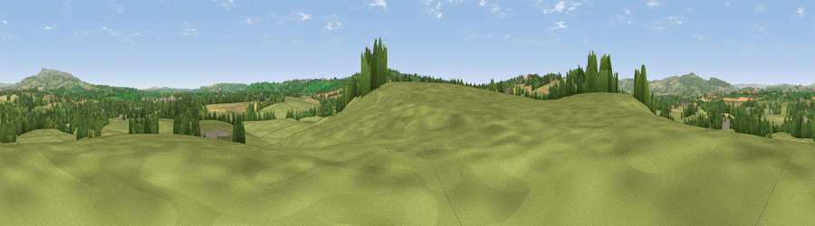

Viewpoint near Little Hereford
#24197 in England · top 65% of its area beats it · near Little HerefordWhere it is
The exact computed spot (SO 55425 66975). Click the marker for map links.
The view, rendered

A 360° render of this exact spot computed from the terrain model, tree cover and land cover — summer colours, afternoon light, calibrated against photographs of famous viewpoints. Real trees, hedges and buildings will differ in detail.
The panorama
Grey silhouette: terrain skyline in each direction (720 bearings, Earth curvature and refraction included). Dashed green: skyline with trees (+15 m) and buildings (+8 m) as obstacles. Blue strip: how far the ground is visible on each bearing.
Where the view opens
Wedge length = distance to the farthest visible ground on that bearing (vegetation-aware). Rings at 10, 25 and 50 km.
What fills the view
61% grassland · 23% cropland · 15% woodland ·
Angular shares of the visible panorama (visual magnitude), not map area. Landscape diversity 0.42 (0–1 Shannon).
Key numbers
More beautiful places nearby
The staircase of upgrades: each row has a higher view potential than everything closer. Driving times are estimates from straight-line distance, calibrated against real road routing — check an actual route before setting out.
| Place | Direction | Drive | Score |
|---|---|---|---|
| Viewpoint near Brimfield | W · 1 km | ~4 min | 55.1 |
| Viewpoint near Brimfield | WSW · 3 km | ~7 min | 60.9 |
| Viewpoint near Bockleton | SE · 5 km | ~11 min | 61.5 |
| Viewpoint near Tenbury Wells | ESE · 5 km | ~11 min | 66.3 |
| Viewpoint near Bockleton | SE · 7 km | ~15 min | 68.1 |
| Viewpoint near Hope Bagot | NNE · 8 km | ~16 min | 73.7 |
| Viewpoint near Yarpole | W · 9 km | ~18 min | 78.1 |
| Viewpoint near Cleehill | NNE · 10 km | ~19 min | 82.3 |
52.29908, -2.65507 · source: screening · position refined by local search. Computed location — check access rights before visiting.